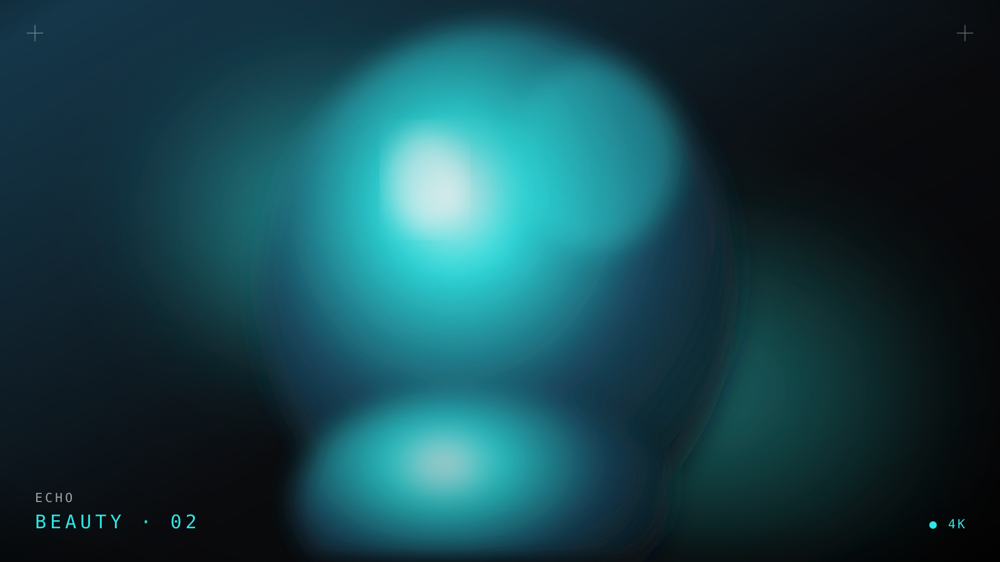
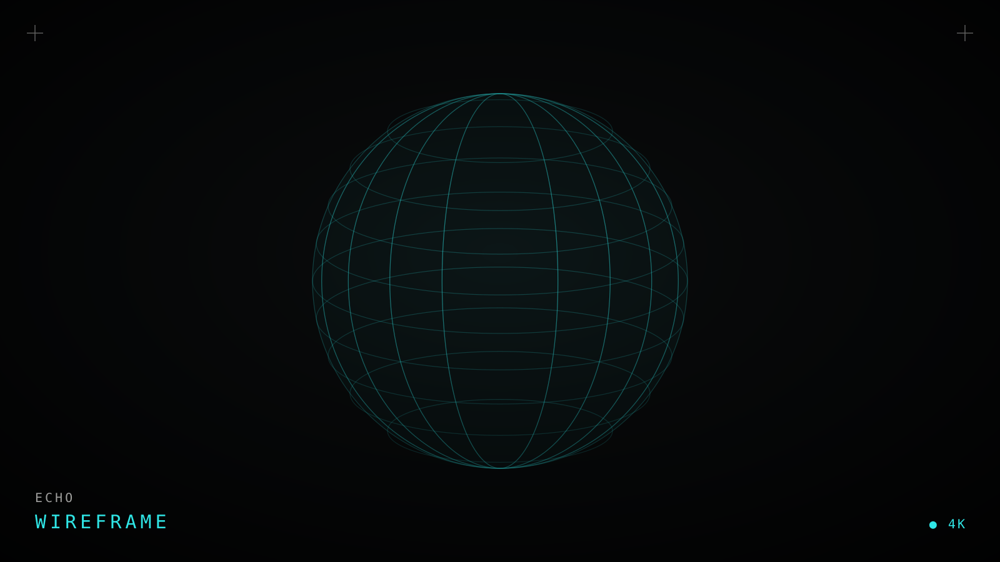
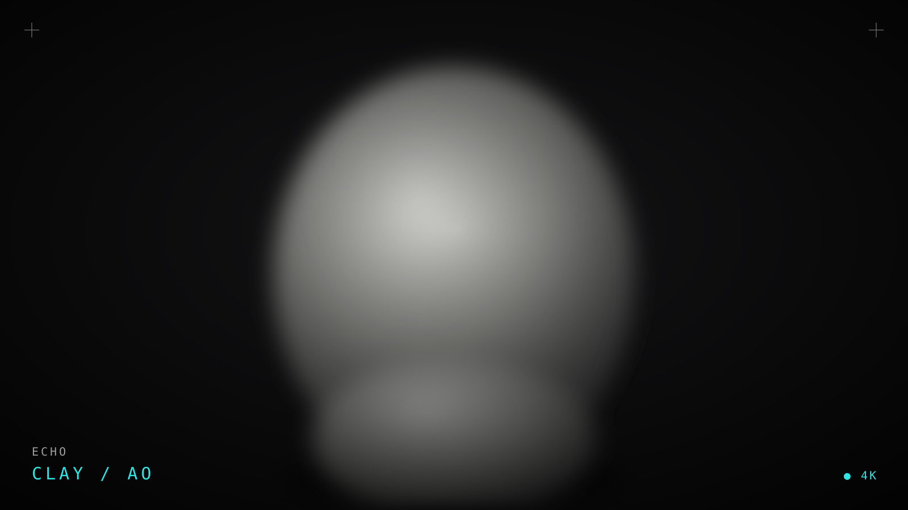
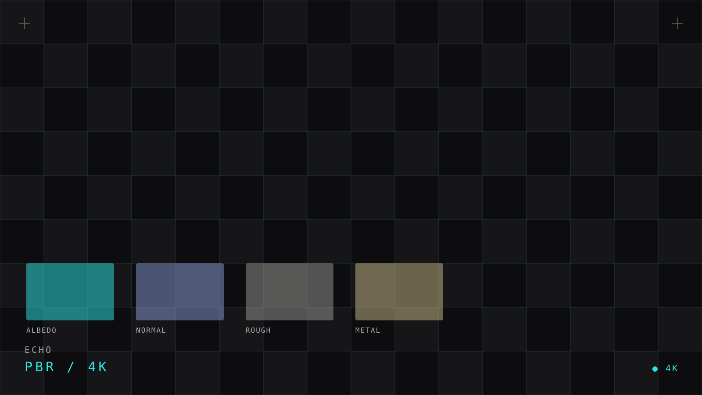

Scroll
A real-time digital human built in MetaHuman and pushed far past the preset — custom sculpt, hand-authored skin, and a groom that holds up in close-up.
Echo started as a question: how human can a real-time MetaHuman feel once you stop trusting the presets? I rebuilt the face from a custom ZBrush sculpt, wrapped it back onto the MetaHuman topology, and hand-authored the skin so pores, blood flow and micro-detail read under hard light.
The groom was rebuilt in XGen and ported to Unreal's strand-based hair, with look dev and lighting finished in-engine so everything you see runs at frame rate — no offline cheats.
Pipeline
- Custom high-poly face sculpt in ZBrush over a MetaHuman base.
- Wrap + retopology back onto MetaHuman-compatible topology.
- Multi-layer PBR skin with SSS authored in Substance 3D Painter.
- Strand groom built in XGen, converted to UE5 hair cards & strands.
- Real-time look dev, lighting and final frames in Unreal Engine 5.
Software
MetaHuman Creator
ZBrush
Substance 3D Painter
XGen
Unreal Engine 5
Marmoset Toolbag
MetaHuman
Rig
4K PBR + SSS
Skin
Strand-based
Hair
UE5 · Lumen
Engine



